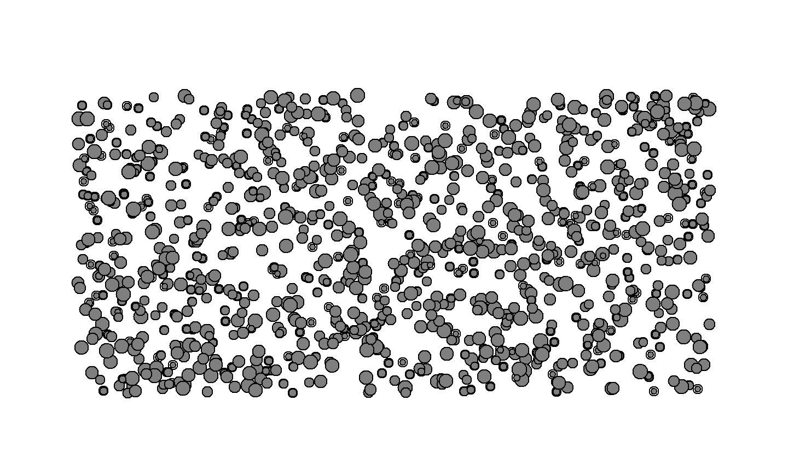
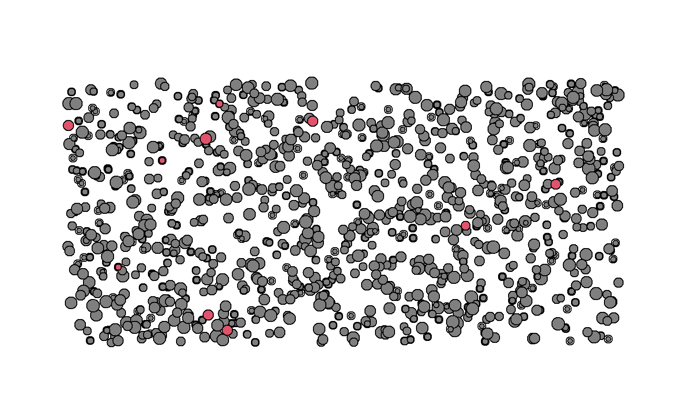
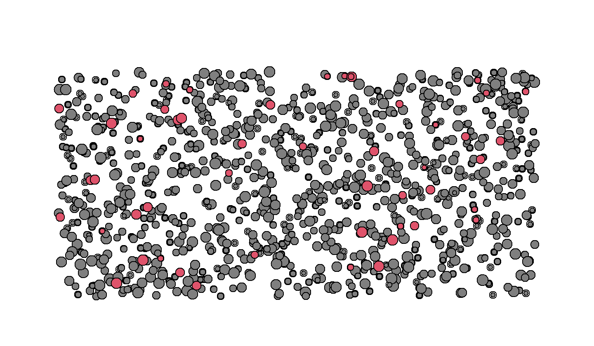
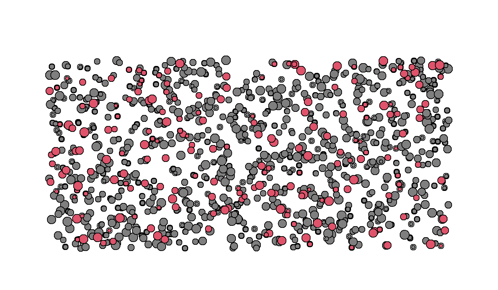
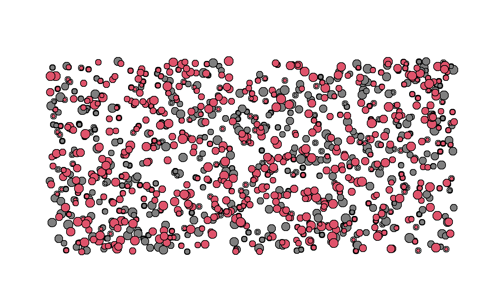
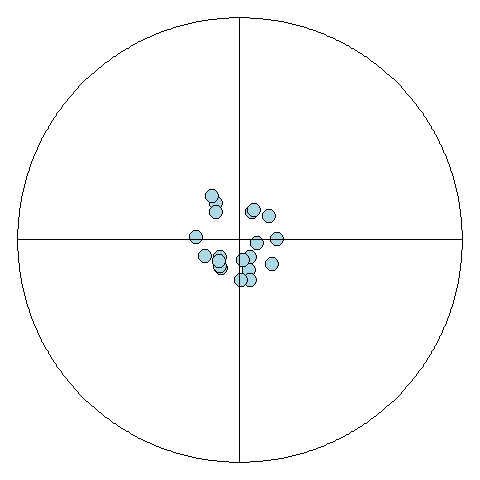
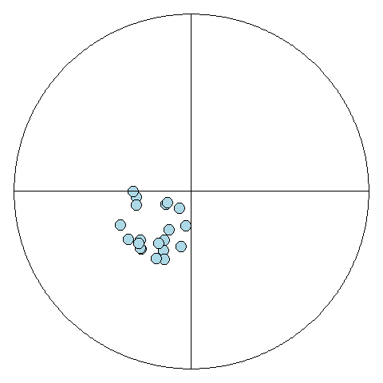
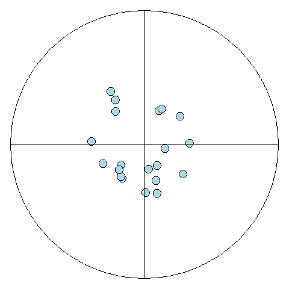
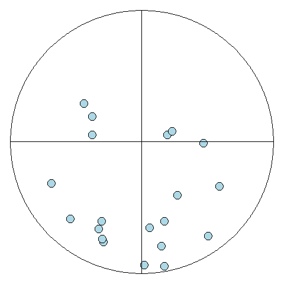

La Estadística es la ciencia que se encarga de observar, agrupar, clasificar y organizar datos para su posterior interpretación, análisis y toma de decisiones. El Universo está compuesto de infinidad de datos cuantitativos y cualitativos, desde las diferentes disciplinas pueden interpretarse con el fin de comprender profundamente todos los fenómenos, pero la estadística puede abarcar, sin atreverse a reemplazar, las diferentes esferas del conocimiento para darle soporte a los descubrimientos.
Los métodos estadísticos están enfocados para tratar con la complejidad de la realidad, no obstante es importante que aquel que aplique la estadística comprenda profundamente, tanto los fenómenos a estudiar en su movimiento, como las herramientas propicias y su correcta interpretación.
En la actualidad, se ha tratado la estadística como conjunto de métodos complementarios a la disciplina original del investigador, llevando a que éstos menosprecien la seriedad que amerita la comprensión de todo su universo; a su vez la estadística ha sido empleada con fines pseudocientíficos para justificar comportamientos sociales, leyes jurídicas y económicas o publicación de fármacos ineficientes o peligrosos.
Cuando se escucha la palabra Estadística, la primera asociación es con la oficialidad, con las estadísticas del Estado: índices de pobreza, desempleo, violencia, entre otras. Si bien dichas cifras en ocasiones no reflejan la realidad de un país, esto no quiere decir que los métodos estadísticos o la Estadística en general es equívoca, pues la ciencia no es neutral, es decir, son los seres humanos quienes desarrollan técnicas y hacen descubrimientos en medio de relaciones sociales que son reflejo de la dinámica económica actual, por tanto los intereses de grupos de personas se ven reflejados en el desarrollo de la ciencia, en su uso y sus objetivos.
Es menester de los investigadores, que realmente respetan la ciencia, hacer una valoración epistemológica de su qué hacer científico, es decir, la motivación del para qué de la investigación, pues el papel de la ciencia debe estar enfocada en buscar la verdad tal y como es, sin importar si conviene o no a un grupo en particular.
La Estadística presenta dos etapas para el estudio de los datos, la estadística descriptiva y la analítica. La estadística descriptiva o deductiva comprende todo el conjunto de herramientas para organizar, clasificar y evidenciar aspectos característicos de los datos, que sirve para efectuar comparaciones sin pretender sacar conclusiones, es simplemente apreciativo y el primer paso para realizar hipótesis. Estas descripciones se logran a través de la construcción de tablas, gráficas, cuadros, cálculos de promedios, varianzas y proporciones.
La estadística analítica o inferencial busca dar explicaciones al comportamiento particular de un conjunto de observaciones, probar significación o validez de las hipótesis planteadas e intenta descubrir las causas que originan dichos comportamientos. Con la inferencia se puede hacer conclusiones contundentes sobre las comparaciones o el modelamiento de las muestras.
Una parte fundamental de la estadística es la que comprende el muestreo, que trata de las técnicas para la determinación de tamaños de muestra de acuerdo al tipo de población de estudio, a su vez el muestreo comprende las formas de recolección de los datos, buscando completa aleatorización del proceso para evitar errores o sesgos en el desarrollo de la investigación.
Sin muestras no es posible hacer estadística descriptiva, sin los datos organizados y bien descritos no es posible hacer inferencias sobre los resultados y sin comprender las técnicas e interpretar bien la estadística inferencial no es posible utilizar correctamente las técnicas de muestreo.
La estadística no es un proceso lineal, más bien, como toda ciencia, tiene proceso en espiral, y la principal forma de hacer buena estadística es comprender profundamente sus conceptos, la correcta interpretación de los resultados.
Antes de realizar un estudio para utilizar herramientas estadísticas, es necesario comprender algunos conceptos básicos sobre los individuos que se estudian.
Población: es el conjunto de medidas, individuos u objetos que comparten características en común. La población se basa en cuatro tipos: contenido, unidades y elementos, ubicación espacial y ubicación temporal.
Muestra: es un conjunto de elementos representativos extraídos de la población. Los resultados obtenidos en la muestra sirven para estimar el comportamiento de la población. Para que los resultados de la muestra puedan generalizarse a la población, ésta debe ser seleccionada adecuadamente, de tal forma que todos los elementos de la población tengan la oportunidad de ser escogido, a este tipo de muestra se le llama muestra aleatoria.
Censo: es cada uno de los miembros de la población.
Unidad: es el elemento seleccionado de la población.
El parámetro son aquellos valores que explican numéricamente a una población, en estos términos la población puede tener muchas características o parámetros de interés, en este sentido una de las formas de determinarlo es a partir de las medidas de tendencia central que comprende los valores de la media, la moda, la mediana, los cuartiles, los deciles y los percentiles que indican la posición de un valor respecto al comportamiento de la población.
Otras características de la población se determinan a partir de las medidas de dispersión que comprende los valores de la varianza, la desviación estándar y el coeficiente de variación que nos permite observar qué tan alejados están los elementos unos de otros. Establecer estas medidas permite determinar el grado de eficacia de los instrumentos de medición para evitar errores de sesgo. Estas medidas solo pueden ser calculadas para datos cuantitativos, pues para los datos cualitativos solo se pueden describir mediante la organización de los conteos.
Cuando se trata de una muestra extraída de una población, el cálculo de las características cambiará, y ya no hablaremos de parámetro sino de estadístico.
Se puede concluir que un parámetro es a una población, como un estadístico es a una muestra.
En general para describir los parámetros se utilizan letras del alfabeto griego (\(\mu\), \(\sigma\), \(\tau\), \(\rho\)) y para los estadísticos se utilizan letras del alfabeto latino (\(S\), \(M_o\), \(\bar{X}\)).
El objetivo es medir, categorizar o cuantificar las características de cada unidad seleccionada, estas características se les conoce como variables. Si cada uno de los elementos seleccionados hacen parte de una muestra aleatoria, entonces las variables extraídas de cada unidad son variables aleatorias, ya que, al ser medida en diferentes unidades es susceptible de adoptar diferentes valores.





Medición es el proceso de asignar numerales a los objetos de acuerdo con ciertas reglas. (Stevens, 1951)
Todo proceso de medición implica
“Los Instrumentos son aquellos objetos materiales que nos permiten adquirir y analizar datos mediante los cuales pueden ser comprobadas las hipótesis de la investigación” (Best, 1973).
“Los instrumentos son procedimientos sistemáticos y estandarizados que permiten observar la conducta humana, a fin de hacer inferencias sobre determinados constructos, rasgos, dimensiones o atributos.” (Ruiz, 2002)
La validez es la capacidad de un instrumento de medición de cuantificar de forma significativa y adecuada la variable que pretende medir. Antes de seleccionar un instrumento de medición es necesario plantearse estas preguntas:
¿Cuán representativo es el comportamiento elegido como muestra del universo que se intenta representar? (validez de contenido)
¿Hasta dónde un instrumento mide realmente una determinada rasgo latente o una característica de las personas y con cuánta eficiencia lo hace? (validez de constructo)
¿Hasta dónde se puede predecir su aprendizaje en un programa de entrenamiento (o hasta dónde se puede anticipar su nivel de desempeño en el trabajo), a partir de su ejecución en la prueba? (validez predictiva)
Un instrumento para medir la inteligencia válido debe medir la inteligencia y no la memoria.
Una prueba sobre conocimientos de Anatomía debe medir esto y no conocimientos de Biología.
Existen factores que afectan la confiabilidad y validez de un instrumento:
La improvisación para seleccionar o generar un instrumento.
Que el instrumento sea externo y no esté validado en el contexto donde se pretende aplicar.
Que el instrumento resulte inadecuado para los sujetos.
Que haya condiciones adversas para su aplicación (ruido, fatiga en los sujetos, etc.)
Aspectos técnicos (digitación, que no se entiendan las instrucciones, etc.)
La confiabilidad está relacionada con el grado en el cual la aplicación repetida de un instrumento al mismo sujeto produce resultados iguales. Existen diversos métodos para determinar la confiabilidad.
El que responde u observa es una fuente de error.
Errores de escala.
Errores aleatorios.
Errores sistemáticos.
¿Cuál es el mejor escenario?




Los datos son las observaciones recolectadas de las unidades, entonces, los datos muestrales son las observaciones recolectadas de las muestras. Ahora, los datos tienen sentido y no se deben tomar como meramente números o cantidades, por ejemplo, las cédulas son números de identificación únicos para llevar el registro de personas en un país, en consecuencia, no tiene sentido hacer análisis sobre estos números como calcular promedios o medianas.
Dependiendo de la naturaleza de los datos, se seleccionan los métodos estadísticos para describir, analizar o modelar. Existen dos tipos de datos en lo fundamental: datos cualitativos y datos cuantitativos
Los datos cualitativos o también conocidos como categóricos, son aquellos que describen una cualidad y se cuantifica a través de su ocurrencia o conteo. Por ejemplo, el sexo de los atletas o el estrato socio-económico.
Los datos cuantitativos consisten en números que representan conteos o mediciones precisas. Por ejemplo, la presión sanguínea, los segundos recorridos de un atleta, el número de pases logrados de un jugador de baloncesto.
Tanto los datos cualitativos como cuantitativos tienen subdivisiones, los cuales dependen de la escala de medición:
Esta escala diferencia entre ítems basándose únicamente en sus nombres o meta-categorías y otras clasificaciones cualitativas a las que pertenecen. Los números puede usarse para representar las variables, sin embargo, no tienen ningún valor numérico o relación. Por otra parte, estas categorías no guarda ninguna relación jerárquica y no tiene sentido un orden plausible. Por ejemplo:
Si los números se asignan como etiquetas en la medición nominal, no tienen un valor numérico específico o significado. No se puede realizar ninguna forma de cálculo aritmético (\(+\), \(-\), \(\times\), etc.) en medidas nominales. El nivel nominal es el nivel de medición más bajo utilizado desde un punto de vista estadístico.
El tipo ordinal permite el orden de rango (1°, 2°, 3°, etc.) por el cual se pueden ordenar los datos, pero aún no permite un grado relativo de diferencia entre ellos. Las órdenes de rango representan escalas ordinales y se utilizan con frecuencia en investigaciones relacionadas con fenómenos cualitativos.
El puesto de un atleta en una carrera implica el uso de una escala ordinal. Hay que tener mucho cuidado al hacer una declaración sobre las puntuaciones basadas en escalas ordinales. Por ejemplo, si la posición de Alejandra es 2 y la posición de Claudia es 8, no se puede decir que la posición de Alejandra sea cuatro veces mejor que la de Claudia La declaración no tendría ningún sentido. Las escalas ordinales solo permiten clasificar los elementos de mayor a menor. Por ejemplo:
El tipo de intervalo permite el grado de diferencia entre los elementos, pero no la relación entre ellos. Las variables de tipo de intervalo a veces también se denominan “variables escaladas”, pero el término matemático formal es un espacio afín (en este caso, una línea afín).
El tipo de razón toma su nombre del hecho de que la medición es la estimación de la razón entre una magnitud de una cantidad continua y una unidad de magnitud del mismo tipo (Michell, 1997, 1999). Una escala de razón posee un valor cero significativo (único y no arbitrario). Por ejemplo:
A diferencia de las escalas de intervalo, las proporciones ahora son significativas porque tener un punto cero no arbitrario hace que sea significativo decir, por ejemplo, que un objeto tiene “el doble de longitud”.
Las variables cualitativas o categóricas se dividen en:
Las variables cuantitativas se dividen en:
La relación entre escalas y variables es la siguiente:
\[\text{Escala Nominal} \Longrightarrow \text{Cualitativa Nominal}\]
\[\text{Escala Ordinal} \Longrightarrow \text{Cualitativa Ordinal}\]
\[\text{Escala de Intervalo y Razón} \Longrightarrow \begin{cases} \text{Cuantitativa Discreta} \\ \text{Cuantitativa Continua} \end{cases}\]
Excel es una herramienta muy poderosa para construir tablas, hojas de cálculo, gráficos y macros que facilitan la vida laboral y también investigativa. Este software también se puede mezclar con R, se puede construir un conjunto de datos en Excel y leerlos en R para realizar los análisis estadísticos, o bien, los resultados que se quieran guardar también se pueden exportar a Excel.
Una vez en la etapa final de toma de muestras, es necesario organizar la información de tal manera de que cualquiera que trabaje con estadística pueda entender el conjunto de datos y no realizar reprocesos de limpieza de información, los cuales son muy dispendiosos.
Las pautas mínimas para la construcción de una base de datos en Excel son las siguientes: